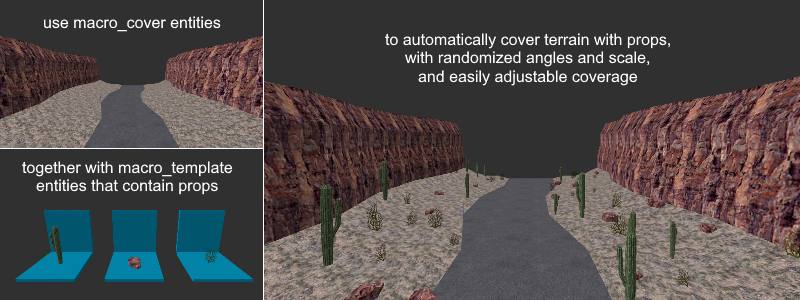
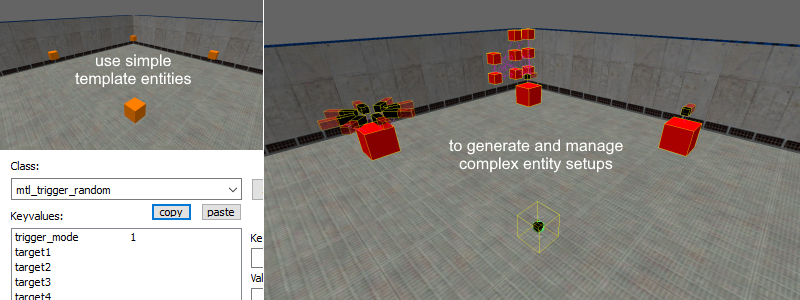
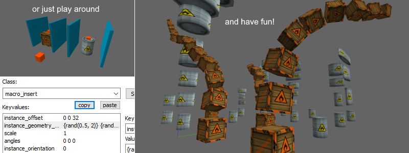

1. Getting started
MESS (Macro Entity Scripting System) is a map compile tool that gives Half-Life level designers the following tools:
- A template instancing system that can be used in a variety of ways, such as for decorating terrain or for generating repetitive entity setups.
- Multiple template entities and template behaviors that can greatly simplify complicated entity setups, such as triggering random targets.
- A scripting language that can be used for additional randomization and customization, or for creating custom template entities and behaviors.
To get started, download MESS 1.2.1 and follow the J.A.C.K. & Hammer setup guide or the Trenchbroom setup guide.
Bugs can be reported on github.com/pwitvoet/mess/issues.


